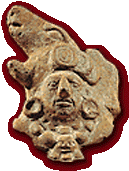

|
Recent
team highlights
The
Jaguar Jaws defeated the Feather Shields of Dzibilchaltún in a
thrilling match after  crushing
that noble city in battle. He Takes Blood of the Shields gave the Jaws
a run for their cacao beans, nearly scoring with a powerful hip slam that
was blocked by Heart of Jade. Then the Jaws’s Air Macaw muscled the ball
from Peccary Snout of the Shields and tallied on a knee blast. It was
the first goal fans have seen in nearly half a
tun.
The
defeated team's captain, He Takes Blood, was sacrificed. He met his fate
with dignity. A priest of Chichén Itzá honored him during
a ceremonial dance.
|